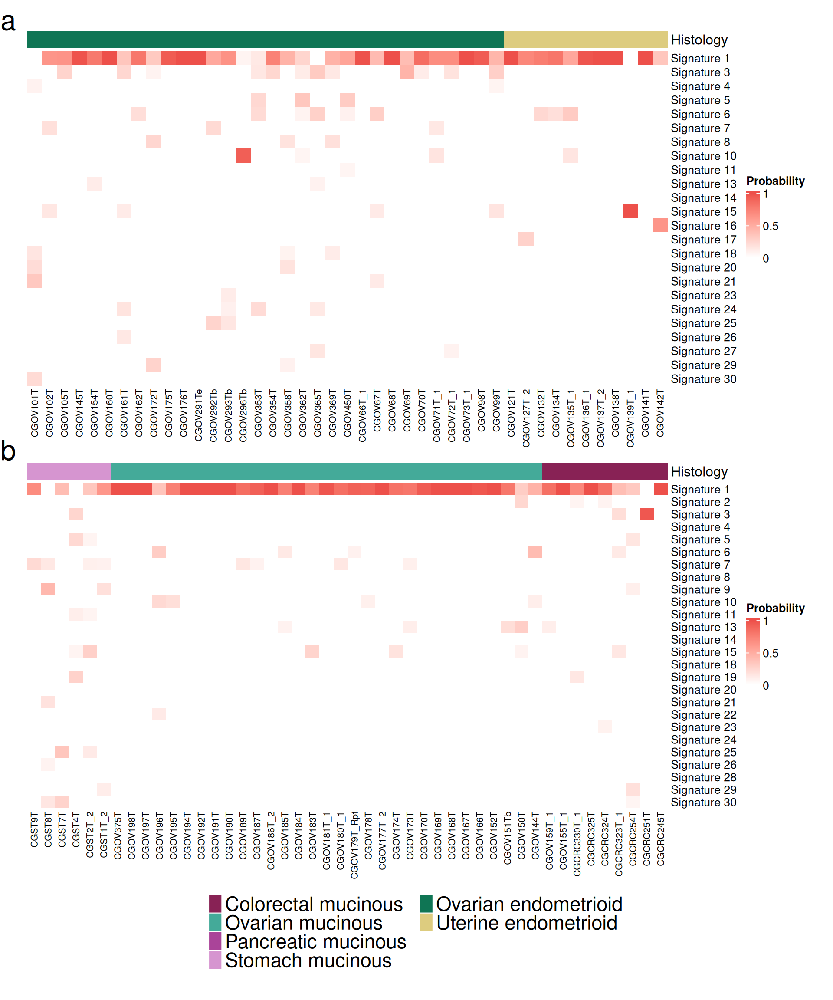

Last updated: 2026-08-31
Checks: 6 1
Knit directory: repo/analysis/
This reproducible R Markdown analysis was created with workflowr (version 1.7.2). The Checks tab describes the reproducibility checks that were applied when the results were created. The Past versions tab lists the development history.
Great! Since the R Markdown file has been committed to the Git repository, you know the exact version of the code that produced these results.
Great job! The global environment was empty. Objects defined in the global environment can affect the analysis in your R Markdown file in unknown ways. For reproduciblity it’s best to always run the code in an empty environment.
The command set.seed(12345) was run prior to running the
code in the R Markdown file. Setting a seed ensures that any results
that rely on randomness, e.g. subsampling or permutations, are
reproducible.
Nice! There were no cached chunks for this analysis, so you can be confident that you successfully produced the results during this run.
Great job! Using relative paths to the files within your workflowr project makes it easier to run your code on other machines.
Great! You are using Git for version control. Tracking code development and connecting the code version to the results is critical for reproducibility.
The results in this page were generated with repository version 9e09a1a. See the Past versions tab to see a history of the changes made to the R Markdown and HTML files.
Note that you need to be careful to ensure that all relevant files for
the analysis have been committed to Git prior to generating the results
(you can use wflow_publish or
wflow_git_commit). workflowr only checks the R Markdown
file, but you know if there are other scripts or data files that it
depends on. Below is the status of the Git repository when the results
were generated:
Ignored files:
Ignored: .Rhistory
Ignored: .claude/
Ignored: .uvr/
Ignored: .vscode/
Ignored: REPRODUCIBILITY_PLAN.html
Ignored: Rplots.pdf
Ignored: _targets/
Ignored: bam_clean/
Ignored: baseline_review/
Ignored: cards/dashboard.html
Ignored: code/archive/
Ignored: data/crosswalk_private.csv
Ignored: data/ega_file_listing.csv
Ignored: extdata/bVals.rds
Ignored: extdata/bVals081820.rds
Ignored: extdata/mutation_reports/
Ignored: hallberg2025.base/
Ignored: hallberg2025.meth.data/data-raw/.Rhistory
Ignored: hallberg2025.meth.data/data-raw/_targets/
Ignored: hallberg2025.meth.data/data-raw/_targets_change002_delta/
Ignored: hallberg2025.meth.data/data-raw/beta_concordance_batch1.png
Ignored: hallberg2025.meth.data/data-raw/logs/
Ignored: hallberg2025.meth.data/data-raw/slurm-34256940.out
Ignored: hallberg2025.meth.data/data-raw/slurm-34683691.out
Ignored: hallberg2025.seq.data/data-raw/.Renviron
Ignored: hallberg2025.seq.data/data-raw/Rplots.pdf
Ignored: hallberg2025.seq.data/data-raw/facets_metrics/
Ignored: hallberg2025.seq.data/data-raw/facets_metrics_wes/
Ignored: hallberg2025.seq.data/data-raw/logs/
Ignored: hallberg2025.seq.data/data-raw/reproduction_output/
Ignored: hallberg2025.seq.data/data-raw/slurm-34294594.out
Ignored: hallberg2025.seq.data/data-raw/slurm-34352530.out
Ignored: hallberg2025.seq.data/data-raw/slurm-34491256.out
Ignored: hallberg2025.seq.data/data-raw/slurm-34523320.out
Ignored: hallberg2025.seq.data/data-raw/slurm-34537166.out
Ignored: hallberg2025.seq.data/data-raw/slurm-w2-verify-34363920.out
Ignored: hallberg2025.seq.data/data-raw/slurm-w3-verify-34368104.out
Ignored: hallberg2025.seq.data/data-raw/slurm-w3-verify-34408517.out
Ignored: hallberg2025.seq.data/data-raw/snp_matrix/
Ignored: hallberg2025.seq.data/data-raw/snp_matrix_wes/
Ignored: hallberg2025.seq.data/data-raw/tools/snplocschr1
Ignored: hallberg2025.seq.data/data-raw/tools/snplocschr10
Ignored: hallberg2025.seq.data/data-raw/tools/snplocschr11
Ignored: hallberg2025.seq.data/data-raw/tools/snplocschr12
Ignored: hallberg2025.seq.data/data-raw/tools/snplocschr13
Ignored: hallberg2025.seq.data/data-raw/tools/snplocschr14
Ignored: hallberg2025.seq.data/data-raw/tools/snplocschr15
Ignored: hallberg2025.seq.data/data-raw/tools/snplocschr16
Ignored: hallberg2025.seq.data/data-raw/tools/snplocschr17
Ignored: hallberg2025.seq.data/data-raw/tools/snplocschr18
Ignored: hallberg2025.seq.data/data-raw/tools/snplocschr19
Ignored: hallberg2025.seq.data/data-raw/tools/snplocschr2
Ignored: hallberg2025.seq.data/data-raw/tools/snplocschr20
Ignored: hallberg2025.seq.data/data-raw/tools/snplocschr21
Ignored: hallberg2025.seq.data/data-raw/tools/snplocschr22
Ignored: hallberg2025.seq.data/data-raw/tools/snplocschr3
Ignored: hallberg2025.seq.data/data-raw/tools/snplocschr4
Ignored: hallberg2025.seq.data/data-raw/tools/snplocschr5
Ignored: hallberg2025.seq.data/data-raw/tools/snplocschr6
Ignored: hallberg2025.seq.data/data-raw/tools/snplocschr7
Ignored: hallberg2025.seq.data/data-raw/tools/snplocschr8
Ignored: hallberg2025.seq.data/data-raw/tools/snplocschr9
Ignored: hallberg2025.seq.data/data-raw/tools/snplocschrX
Ignored: hallberg2025.seq.data/data-raw/tools/snplocschrY
Ignored: hallberg2025.seq.data/data-raw/tools/zenodo-deposit-draft/
Ignored: hallberg2025.seq.data/data-raw/trellis_output/
Ignored: hallberg2025.seq.data/tests/testthat/_snaps/
Ignored: hallberg2025/
Ignored: inst/
Ignored: logs/
Ignored: manuscript/audit/
Ignored: manuscript/composite-1.eps
Ignored: manuscript/data_quality.html
Ignored: manuscript/hallberg2025.aux
Ignored: manuscript/hallberg2025.bbl
Ignored: manuscript/hallberg2025.blg
Ignored: manuscript/hallberg2025.log
Ignored: manuscript/supplemental.aux
Ignored: manuscript/supplemental.log
Ignored: manuscript/supplemental.pdf
Ignored: manuscript/testing/
Ignored: manuscript/~/
Ignored: output/01-coverage_stats.rmd/
Ignored: output/02-mutations.rmd/
Ignored: output/03-mutations.rmd/
Ignored: output/04-mutations.rmd/
Ignored: output/05-data_integration.rmd/
Ignored: output/07-figure5.rmd/stats.rds
Ignored: output/08-figure5.rmd/
Ignored: output/ext-figure9.Rmd/
Ignored: output/ext-figures/ext-figure9.Rmd/proportion_methylated.rds
Ignored: output/ext-figures/ext-figure9.Rmd/wilcox_stats.csv
Ignored: output/ext-figures/mutation_prevalence.rmd/
Ignored: output/facets-trellis/
Ignored: output/facets/
Ignored: output/figure6_jhu-heatmap.Rmd/
Ignored: output/figure6_tcga-heatmap.Rmd/
Ignored: output/gene_pathway.rmd/
Ignored: output/methylation.Rmd/
Ignored: output/mutations.html
Ignored: output/mutations.rds
Ignored: output/pcs.Rmd/
Ignored: output/pgdx_reports.rmd/
Ignored: output/read_length.rmd/
Ignored: output/temp.tar.gz
Ignored: output/temp/
Ignored: public/
Untracked files:
Untracked: manuscript/submitted/
Note that any generated files, e.g. HTML, png, CSS, etc., are not included in this status report because it is ok for generated content to have uncommitted changes.
These are the previous versions of the repository in which changes were
made to the R Markdown (analysis/ext-figure3.Rmd) and HTML
(docs/ext-figure3.html) files. If you’ve configured a
remote Git repository (see ?wflow_git_remote), click on the
hyperlinks in the table below to view the files as they were in that
past version.
| File | Version | Author | Date | Message |
|---|---|---|---|---|
| Rmd | 046240e | rscharpf | 2026-08-03 | MAN-05: repoint _targets.R and analysis/manuscript Rmds at renamed packages |
| html | 21ba89c | rscharpf | 2026-07-31 | GIT-03: untrack reproducible docs/ and output/ generated artifacts |
| html | 0bc1639 | rscharpf | 2026-07-01 | Update docs, OvarianSubtypeExperimentData accessors, and artifact baseline (prettyNum formatting fix for table_S6/S8) |
| Rmd | 8eb0216 | rscharpf | 2026-07-01 | Fix: suppress sessionInfo() in figure6.Rmd and ext-figure3.Rmd to avoid La_library() segfault in callr subprocess |
| html | 0476813 | rscharpf | 2026-06-30 | Rebuild manuscript PDF and analysis HTMLs with corrected mutation spectra |
| html | 0b0955c | rscharpf | 2026-06-29 | Fix case-sensitive paths: Rmd→Rmd, rmd→Rmd in _targets.R, ext-figure9, supplemental.tex; regenerate affected HTML pages |
| html | 00cb585 | rscharpf | 2026-06-29 | wflow_build: regenerate analysis/ HTML and fix ext-figure2 |
| Rmd | 40ab555 | Shashikant Koul | 2025-03-22 | Updated figures and supp figures with purity_filter |
| Rmd | 526f3d5 | Shashikant Koul | 2025-03-10 | Rebuild supp fig 3 |
| Rmd | 93ceecf | Alice Eastman | 2025-03-06 | endometrial>enedometrioid terminology |
| html | 9e5779b | rscharpf | 2025-01-14 | Rebuilt all workflowr figures |
| html | 05caea1 | rscharpf | 2024-08-30 | Update html and figures |
| html | fea052d | rscharpf | 2024-08-18 | Updates for latest ovarian.subtypes R package |
| html | 4a850fc | Shashikant Koul | 2024-07-17 | Rebuild and publish |
| html | 79ddb57 | Shashikant Koul | 2024-07-02 | Rebuild docs |
| html | 3ec3697 | Shashikant Koul | 2024-06-21 | Build and publish |
| Rmd | 90320c1 | Shashikant Koul | 2024-06-18 | Update Supp Figure 3 |
| html | 423c880 | rscharpf | 2024-05-26 | Update COI and add renv info |
| html | 825bdcc | rscharpf | 2024-05-26 | Update workflowr analyses |
| html | bf38e1d | rscharpf | 2024-01-02 | Update html docs and figure pdfs |
| html | 2f29951 | rscharpf | 2023-12-30 | Build site. |
| Rmd | 5bcefbc | rscharpf | 2023-12-30 | wflow_publish("analysis/ext-figure3.rmd") |
| html | 200af65 | rscharpf | 2023-12-24 | Build site. |
| Rmd | ae5851e | rscharpf | 2023-12-24 | wflow_publish("analysis/ext-figure3.rmd") |
| html | 40ecef9 | rscharpf | 2023-12-22 | Build site. |
| Rmd | 222d400 | rscharpf | 2023-12-22 | wflow_publish("analysis/ext-figure3.rmd") |
| html | 0f683ec | rscharpf | 2023-12-22 | Build site. |
| Rmd | fee2f17 | rscharpf | 2023-12-22 | wflow_publish("analysis/ext-figure3.rmd") |
| Rmd | ad37fc9 | rscharpf | 2022-10-02 | initialize repo |
| html | ad37fc9 | rscharpf | 2022-10-02 | initialize repo |
library(here)
library(tidyverse)
library(ComplexHeatmap)
library(RColorBrewer)
library(circlize)
library(readxl)
library(magrittr)
library(grid)
library(gridExtra)
library(hallberg2025.base)
rename <- dplyr::renamedata(manifest, package="hallberg2025.base")
manifest <- purity_filter(manifest)
manifest2 <- select(manifest, lab_id, tumor_type) %>%
cancer_names()
manifest3 <- manifest %>%
mutate(t.n=substr(tumor.normal, 1, 1),
t.n=toupper(t.n),
lab_id2=ifelse(grepl("^GT", subject_id),
paste0(subject_id, t.n),
lab_id))
muclabels <- c("Colorectal mucinous",
"Ovarian mucinous",
"Pancreatic mucinous",
"Stomach mucinous")
endolabels <- c("Ovarian endometrioid",
"Uterine endometrioid")
manifest.endo <- filter(manifest2, tumor %in% endolabels)
manifest.muc <- filter(manifest2, tumor %in% muclabels)
##
## Read signatures
##
endosigs <- readRDS(here("extdata", "endosigs.rds"))
rownames(endosigs) <- str_replace_all(rownames(endosigs),
"\\.", " ")
sigs <- paste("Signature", 1:30)
esigs <- sigs[sigs %in% rownames(endosigs)]
mucsigs <- readRDS(here("extdata", "mucsigs.rds"))
rownames(mucsigs) <- str_replace_all(rownames(mucsigs),
"\\.", " ")
msigs <- sigs[sigs %in% rownames(mucsigs)]
endosigs <- endosigs[esigs, ]
mucsigs <- mucsigs[msigs, ]
lab_id_map <- manifest3$lab_id2
names(lab_id_map) <- manifest3$lab_idUse same colors from Figure 6.
dx.colors <- tumor_colors()
muc.colors <- dx.colors[muclabels]
muc.lgd <- Legend(labels=muclabels,
legend_gp=gpar(fill=muc.colors),
labels_gp=gpar(fontsize=17),
title_gp=gpar(fontsize=23),
title="")
endo.colors <- dx.colors[endolabels]
endo.lgd <- Legend(labels=endolabels,
legend_gp=gpar(fill=endo.colors),
labels_gp=gpar(fontsize=17),
title_gp=gpar(fontsize=23),
title="")
pd <- packLegend(muc.lgd, endo.lgd,
direction="horizontal")
leg <- grid.grabExpr(draw(pd))colors <- endo.colors
endosigs2 <- endosigs[, colnames(endosigs) %in% manifest.endo$lab_id]
mucsigs2 <- mucsigs[, colnames(mucsigs) %in% manifest.muc$lab_id]
df2 <- select(manifest.endo, lab_id, tumor) %>%
rename(Histology=tumor) %>%
filter(lab_id %in% colnames(endosigs2)) %>%
mutate(color=colors[Histology]) %>%
arrange(Histology)
df3 <- select(df2, Histology)
dx2 <- list(Histology=colors)
ha_row <- HeatmapAnnotation(df=as.data.frame(df3),
col=dx2,
show_legend=FALSE)
endosigs3 <- endosigs2[, df2$lab_id]
endocols <- colnames(endosigs3)
colnames(endosigs3) <- lab_id_map[match(endocols, names(lab_id_map))]endosigshm <-
endosigs3 %>%
Heatmap(col = colorRamp2(c(0,1),c("#FFFFFF","#ED504A")),
row_names_gp = gpar (fontsize = 10),
top_annotation = ha_row,
show_heatmap_legend = TRUE,
show_row_dend = FALSE,
show_column_dend=FALSE,
row_dend_reorder=FALSE,
row_order=seq_len(nrow(endosigs2)),
heatmap_legend_param = list(title = "Probability"),
column_names_gp = gpar (fontsize = 8),
column_order=seq_len(ncol(endosigs2)))
A <- endosigshmcolors <- muc.colors
##manifest.muc <- manifest %>%
## filter(tumor_type %in% names(colors))
mucinous <- select(manifest.muc, lab_id, tumor) %>%
rename(Histology=tumor) %>%
filter(lab_id %in% colnames(mucsigs2)) %>%
mutate(color=colors[Histology]) %>%
arrange(Histology)
mucinous2 <- select(mucinous, Histology)
dx <- list(Histology=colors)
muc_row <- HeatmapAnnotation(df=as.data.frame(mucinous2), col=dx,
show_legend=FALSE)
mucsigs3 <- mucsigs2[, mucinous$lab_id]
muccols <- colnames(mucsigs3)
colnames(mucsigs3) <- lab_id_map[match(muccols, names(lab_id_map))]
mucsigshm <-
Heatmap(mucsigs3,
col = colorRamp2(c(0,1),c("#FFFFFF","#ED504A")),
row_names_gp = gpar (fontsize = 10),
top_annotation = muc_row,
show_heatmap_legend = TRUE,
heatmap_legend_param=list(title="Probability"),
show_row_dend = FALSE,
row_order=seq_len(nrow(mucsigs3)),
show_column_dend=FALSE,
column_names_gp = gpar (fontsize=8),
column_order = rev(seq_len(ncol(mucsigs3))))
B <- mucsigshmag <- grid.grabExpr(draw(A))
bg <- grid.grabExpr(draw(B))
gl <- list(ag, bg, leg)
m <- matrix(1:3, nrow=3)
vp <- viewport(x=unit(0.5, "npc"),
y=unit(0.5, "npc"),
width=unit(0.95, "npc"),
height=unit(0.95, "npc"),
just="center")
grid.arrange(grobs=gl, layout_matrix=m,
heights=c(0.5, 0.5, 0.1),
vp=vp)
##upViewport()
grid.text(c("a", "b"),
x=unit(c(0.01, 0.01), "npc"),
y=unit(c(0.98, 0.55), "npc"),
gp=gpar(cex=2))